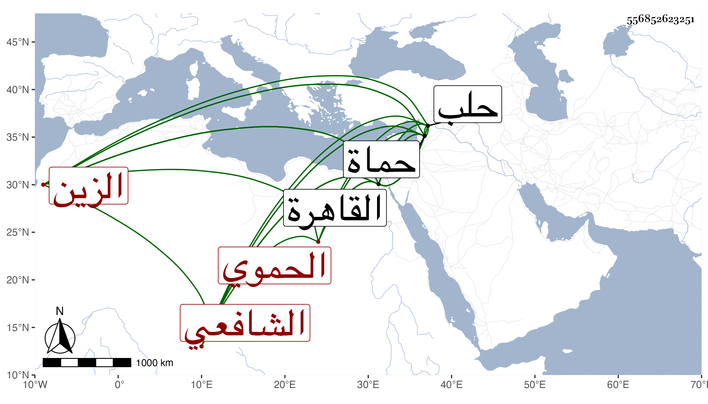

0902Sakhawi.DawLamic.ITO20230111-ara1.EIS1600.556852623251
Biography ID: 556852623251
241
عمر بن أحمد بن المبارك الزين الحموي الشافعي أخذ محمد الآتي هو وولده صاحب الترجمة كمال الدين محمد ويعرف بابن الخرزي بمعجمة مفتوحة ثم راء بعدها زاي ، ولد تقريبا قبل الثمانين وسبعمائة بحماة ونشأ بها فحفظ القرآن على جماعة منهم الزين عمر المؤذن وكان ابتدأ حنفيا وحفظ المجمع وأتقن الفقه ثم تحول شافعيا وحفظ المنهاج الفرعي والأصلي وألفية ابن مالك والحاجبية وغيرها وعرض المنهاج على السراج البلقيني وابن خطيب المنصورية وغيرهما وبالناني ... والعلاء بن المغلي تفقه وأخذ عنهما الأصول وعن الثاني أيضا والتاج الأصفهيدي العجمي الحلبي أخذ العربية وأخذ الطب عن بلديه الشهاب بن زيتون قال وكان عارفا به ، وسمع على التاج بن بردس والزين الزركشي والشمس بن المصري وشيخنا في آخرين من هذه الطبقة لعدم اعتنائه بهذا الشأن بل سمع بالقاهرة ختم البخاري في الظاهرية ، وولي قضاء بلده غير مرة أولها في سنة ست عشرة وكذا ولي قضاء حلب على رأس الأربعين ثم صرف عنه في شعبان سنة ثلاث وأربعين بالعلاء بن خطيب الناصرية وعاد إلى قضائها أيضا في أوائل سنة سبع وأربعين فأقام يسيرا ثم انفصل ، وحمدت سيرته في قضائه ، وقدم القاهرة غير مرة أولها في سنة إحدى وثلاثين وأقرأ بها الطب وغيره وممن أخذ عنه من أصحابنا الشهاب بن أبي السعود وصهره الشهاب البيجوري وكذا أقرأ ببلده وأفتى ، وحج وأقام ببلده معرضا عن القضاء إلى أن مات بها في يوم الجمعة عاشر ربيع الآخر سنة اثنتين وستين وقد لقيته بالقاهرة ثم بحماة وكتبت عنه شيئا من نظمه ومن ذلك قوله في الثلاثة الذين تخلفوا وكل واحد منهم وافق اسم أبيه اسم من تخلف عنه :
| كعب هلال مع مرارة خلفوا | عن مالك وأمية وربيع |
وكان إماما فقيها عالما في فنون متعددة متقدما في العربية والطب شديد العناية بالمشي على قانونه ومع ذلك فكان مصفرا متعللا أما عمامته فأكبر عمامة رأيتها وهي نازلة على عينيه وحواجبه وأمره في ذلك من أعجب العجاب ، وكان يحكى أن ابتداء توعكه وضعف دماغه من أيام الفتنة التمرية فإنهم كشفوا رأسه فأعقبه ذلك وكذا كان يحكى أنه أول قدماته القاهرة كان التنازع حينئذ في مسئلة شراء السلطان من وكيل بيت المال بين شيخنا والعلم البلقيني واتفق حضوره عند شيخنا فتكلم معه فيه فوافقه واستحضر له النقل من كلام الأزرعي في القوت وأنه استكتب حينئذ على الفتيا وصعد مع شيخنا إلى السلطان فأثنى عليه عنده وعند غيره من الأعيان بالعلم وهو ثقة في جميع ما يحكيه رحمه الله وإيانا .
